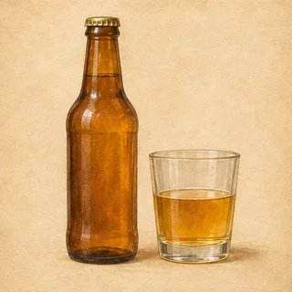
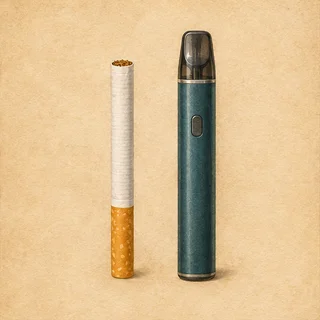
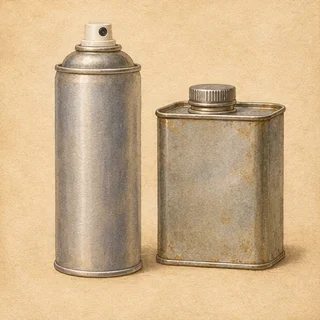
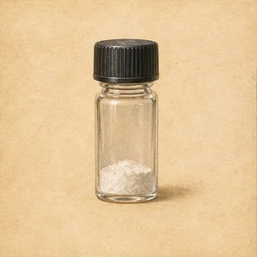

Conoce algunos efectos, aprende a reconocer la presión de otras personas y descubre cuándo buscar ayuda.
Conocer las sustancias
Abre una ficha para ver cómo se presenta, qué puede sentirse y qué conviene tener en cuenta.

AlcoholBebidas
Está en bebidas como la cerveza y el aguardiente. Puede hacer más lentas las reacciones y dificultar el equilibrio y las decisiones.
Una intoxicación puede ser grave. El consumo también aumenta el riesgo de lesiones, dependencia y enfermedades del hígado.
OMS · Leer más
NicotinaCigarrillos y vapeadores
Es una sustancia que contiene el tabaco. También está en muchos vapeadores comerciales. Puede acelerar los latidos del corazón y generar ganas de volver a usar el producto.
Puede causar dependencia. Aquí hablamos de productos comerciales. El tabaco en una práctica propia tiene otro contexto.
OPS · Leer másCannabisPlanta y productos derivados
También se conoce como marihuana. Puede presentarse como material vegetal seco o en alimentos con THC, la sustancia que puede alterar la percepción. Puede costar más prestar atención o recordar lo que acaba de pasar.
Puede dificultar la coordinación, producir ansiedad y aumentar el riesgo de accidentes. Algunas personas desarrollan dependencia.
MedlinePlus · Leer más
InhalantesVapores de algunos productos
Algunos disolventes y aerosoles desprenden vapores que afectan al cerebro. Respirarlos para sentir sus efectos puede causar mareo, confusión y pérdida de coordinación.
Pueden alterar el ritmo del corazón y provocar una intoxicación grave incluso en una sola ocasión.
MedlinePlus · Leer más
CocaínaSustancia estimulante
La cocaína es un estimulante que se obtiene de la planta de coca. Puede presentarse como polvo o cristales. Puede producir una sensación breve de energía y acelerar mucho el corazón.
Puede causar dependencia y problemas graves del corazón. La hoja de coca en su contexto propio es distinta de la cocaína concentrada. El poporo es un objeto.
MedlinePlus · Leer másSi alguien se siente mal tras consumir y sospechas una intoxicación, busca atención de urgencias.
Cuando llega un mensaje sin autor, puedes dejarlo sin reenviar. Si te preocupa alguien que ya consumió, pregúntale cómo está y ofrécele compañía para consultar.
Una planta, un objeto y una decisión
En el territorio, entender un uso también implica saber quién lo orienta y para qué se hace. Explora estas diferencias.
Cuando alguien dice «es natural»
Que una planta tenga un lugar en la vida propia habla de su historia y de sus usos. Esa historia por sí sola no permite saber qué contiene algo que otra persona ofrece ni cómo afectaría a quien lo recibe.
Cuando quieres entender una práctica propia
Puedes acercarte a alguien que conozca esa práctica y preguntar cuándo se usa la planta o el objeto y quién acompaña ese aprendizaje.
Cuando preocupa un cambio en casa
Si el consumo dificulta compartir una comida, descansar o cumplir acuerdos, puedes nombrar lo que observaste y ofrecer compañía. La persona puede elegir conversar con alguien cercano o acudir al centro de salud.
Cada práctica tiene un contextoJañu, nuake y sugi
La hoja de coca, el tabaco y el poporo tienen lugares distintos en las prácticas descritas para el territorio. En el ciclo de desarrollo masculino, la entrega del poporo se relaciona con madurez, reflexión, palabra y responsabilidad.
La hoja de coca y el tabaco son plantas. El poporo es un objeto. Conocer el lugar de cada uno en el territorio ayuda a entender el relato.
Para cuidarPreguntar antes de asumir
Si te preocupa lo que está pasando en una reunión o en casa, puedes contar qué viste y preguntar cómo está la persona. Para hablar del cuidado en su comunidad, pregúntale con quién le gustaría conversar.
Si el grupo insiste, puedes decir «hoy prefiero pasar» y acercarte a alguien con quien te sientas a gusto.